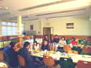
Houlgate, j'arrive le mardi soir pour 3 jours, mais je sais où il faut se rendre : au CREPS, ce gros centre sportif qui nous accueille généreusement dans les chambres de ses stagiaires... Au matin, petit-déjeuner en commun, surtout des asiatiques déjà arrivés, il y aura 17 nations au total.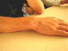
A bricoler avec Peter Lynn, Stephen a attrapé quelques cicatrices dont une sur la main, une fausse manoeuvre qui lui a laissé une petite trace... Un autre manipulateur de gros CVs nous a montré sa cheville par laquelle une bride l'avait soulevé, pas beau non plus !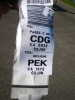
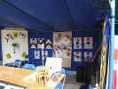
Les Coréens sont venus avec leurs cerfs-volants habituels à trou, de combat en particulier, et les dévidoirs rapides qui font leur force, mais aussi quelques Rokkakus...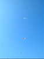
Au matin, vent léger et de terre, je monte mon Spiralier en compagnie de quelques pratiquants du léger...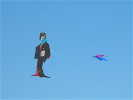
Le vent monte, les Japonais envoient une belle geisha, en compagnie d'oiseaux en train...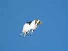
Les Malais ont amené des cerfs-volants originaux : ces vaches en tranches façon dragon qui volent très bien et ont un bon look en l'air.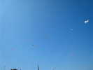
Le Spiralier est stable, il y a de la place sur la plage, j'ajoute la grue, et il commence à y avoir pas mal de monde en vol, pour un nombre de cervolistes quand même réduit...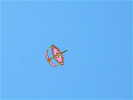
Voilà un grand Wau-Bulan, avec son arc sonore qui a un peu de mal à sonner dans ce vent limité. D'autres, plus petits, se feront en revanche entendre fort sur différents tons !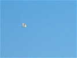
Un héron blanc nous survole sans effort apparent de son vol lent ramé, et sans paraître impressionné par nos engins...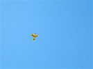
Un aigle monte, et son arc très sophistiqué émet plusieurs sons différents et variables, comme les asiatiques le recherchent...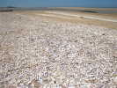
Sur la plage, la mer descend et découvrira un immense espace parsemé de bancs et de "bâches"... Les coquillages laissés sont innombrables et des pêcheurs à pied viennent ramasser les coques...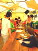
Un grand barnum accueille un des ateliers de cerfs-volants pour les enfants des écoles. Il ne désemplira pas...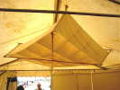
Au plafond, un beau Lecornu à étagères, oblique, qu'il a utilisé pour la photo aérienne...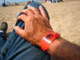
Une fois inscrits, nous sommes dotés d'un bracelet inamovible, qu'il faut garder si on veut manger ! L'an prochain, il sera doté d'une balise pour localiser les cervolistes qui sortent de la zone du festival et ne méritent pas leur repas ?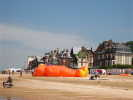
Un énorme nounours fait sa petite sieste, en attendant que le vent soit favorable...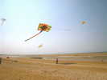
Un grand flow-form asiatique tente de prendre son essor, mais dans le vent variable, il oscille trop et tombe souvent, en particulier sur la tête des baigneurs qui sont moyennement contents...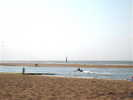
La mer remonte, pas à la vitesse d'un cheval au galop, mais elle entoure insidieusement et quand même vite le banc de sable. Les petits malins qui l'exploraient, mais pas assez malins quand même sont rapatriés par le Zodiac des Secours !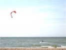
Les kite-surfers sont sortis en fin d'après-midi quand le vent a été suffisant. La Championne du monde viendra nous faire une bonne visite !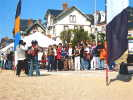
Les asiatiques se soutiennent mutuellement. Ils se font une photo de groupe entre eux...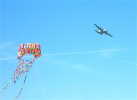
Ca va être le 6 juin, anniversaire du Débarquement. Des avions de l'époque vont nous survoler régulièrement, et le vol des CVs est limité à... 30 m d'altitude ! Les gros ne peuvent voler avec un porteur aussi bas...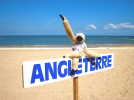
Une bande d'Anglais est présente aussi. Leur mascotte, le singe Minkey, muni de sa licence, fait voler son cerf-volant, un vrai !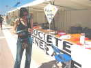
La charmante interprète franco-anglo-chinoise manie la perceuse comme un métallo pour préparer des raccords de 4 à partir de raccords de 3 !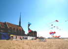
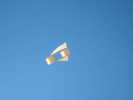
Dominique Cotard est venu réaliser devant le public un CV "Blériot". Il fera voler, aidé de Maxime Fellion et de Paul, l'Anglais historien, quelques spécimens bois-coton ou bambou-coton !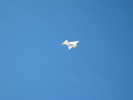
Il a de nombreuses copies de Pantenier et de Gomez de différentes formes, oiseaux ou avions plus ou moins réalistes...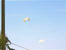
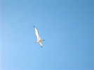
Mon Albatros 2 est plus capricieux que le Numéro 1, mais volera quand même des heures, une fois le bon réglage trouvé !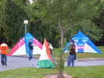
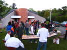
Le pot est à base de punch, mais n'exclut pas d'autres ingrédients plus ou moins alcoolisés...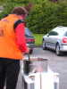
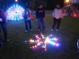
Avec la nuit, les leds sont de plus en plus visibles !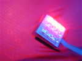
En fait, ce ne sont pas des diodes simples, mais des barrettes de 4, groupées par 3 pour faire du blanc si tout est allumé à la fois ! Une petite centrale gère les patterns variables...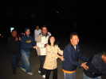
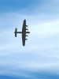
Au matin, les passages d'avions historiques reprennent, nous sommes survolés par une Forteresse Volante, qui ne nous largue rien, heureusement !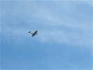
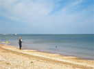
Tiens, le vent a baissé, et les Asiatiques remettent en pratique la pêche au cerf-volant...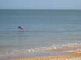
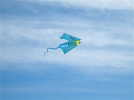
Les Anglais ont mis en l'air un cerf-volant original, mariage lointain de Flare et de PyroDelta, avec une déco d'oiseaux qui ne peuvent que me plaire !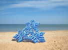
L'Italien habitué à Houlgate a réalisé ce magnifique flocon, c'est le mot approprié, avec ses gimmicks habituels, les fanfreluches stabilisatrices qui vibrionnent derrière...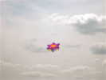
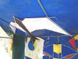
Au rayon des Historics, Paul l'Anglais a amené (et apposé au plafond du stand de Dominique en son absence !) ce curieux oiseau aux angles vifs et bien d'époque !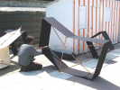
Maxime Fellion met la dernière main à son Heller ou quelque chose comme ça ! Noir comme beaucoup de ses productions, très esthétique, mais dont le centre paraît bien souple...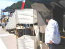
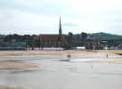
Le vent de terre est faible, je vais vers le bord de mer avec ma grue pour me dégager des immeubles ! Des hérons blancs se sont posés dans les bâches où des poissons, crevettes et autres se font sans doute piéger : ils y viendront à chaque marée !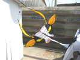
Les vaches sont au sol, ce qui permet de bien voir leur structure : des rondelles successives reliées par une toile qui sert d'épine dorsale ! Les rondelles sont plus ou moins complexes, la tête est particulièrement délicate, car il faut des joncs (qu'on ne voit pas ici) presque tout autour...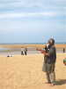
Vendredi après-midi, Ludo lance un défi aux Coréens pour un petit combat ! Ceux-ci gagnent les premières rencontres avec leurs cerfs-volants rigides et rapides, et on appelle Abdul à la rescousse ! Mais finalement, Ludo en coupera quelques-uns.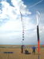
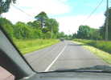
Bon, vendredi vers 17 h, tant pis pour la soirée de fête et les "tires" de sirop d'érable du Canadien Yves Laforêt, je range, et je prends la route pour Cayeux ! En chemin, je croise de nombreux véhicules du Débarquement, mais pas d'embouteillages ou de routes barrées comme je le craignais... J'arriverai juste pour l'apéritif du soir, ouf !